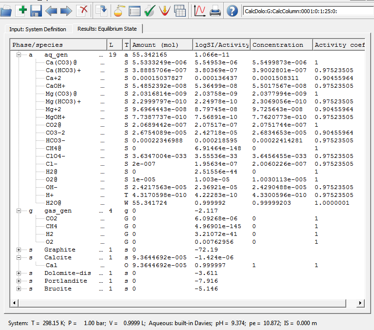
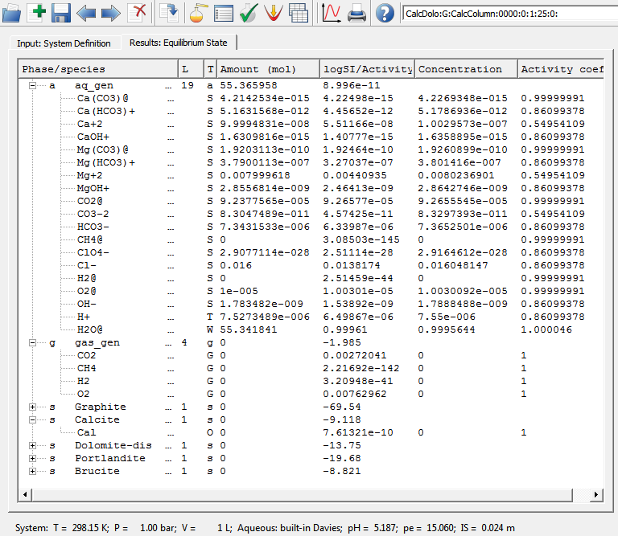

2. The 'CalcDolo' modeling project
3. The 'gemcalc' example: data exchange via I/O files only
4. The 'node-gem' example: data exchange in memory at TNode level
The test
examples of usage of GEMS3K on the TNode and TNodeArray
levels can be executed with the
following command line:
gemnode.exe
<TestDir>/<TaskName>-dat.lst>
[<TaskName>-dbr.lst>]
[ > <TaskName>.out ]
where <TestDir> is
an optional subdirectory path; <TaskName>
should be substituted by a string denoting the
problem name, e.g. "MyTask". The file <TaskName>.out will
contain console output of the program, redirected there during
execution of the
TNode example. Without this redirection, the output can be found in a
terminal (Linux) or lost (Windows).
The simplest example of the command-line GEM calculation on TNode level (that uses GEMS3K I/O files from the example described below) looks like
gemcalc.exe tp_test/CalcColumn-dat.lst tp_test/CalcColumn-dbr.lst
> CalcColumn.out
The file CalcColumn-dat.lst
has the following contents (also automatically created by default
upon file export from the GEM-Selektor project 'CalcDolo'):
-t "CalcColumn-dch.dat"
"CalcColumn-ipm.dat"
"CalcColumn-dbr-0-0000.dat"
This is simply the list of names of three files prepared for the GEMS3K
initialization input;
all these files must be located in the same directory where the CalcColumn-dat.lst file itself is
located.
The -t
command-line key tells that the listed I/O files are
prepared in
a free-text input format. Alternative command-line key is -b telling that the I/O files are
prepared in a binary format (uneditable by the user). In this
case, when the file set is exported from the GEM-Selektor code, the
file <TaskName>-bin.lst will
be written, with the following content:
-b
"CalcColumn-dch.bin"
"CalcColumn.ipm"
"CalcColumn-dbr-0-0000.bin"
The first file in the list, CalcColumn-dch.dat, (or CalcColumn-dch.bin)
contains the input
data for the
chemical system definition (CSD) that can be used by both GEM and the
mass transport parts of the coupled code.
This data are is also needed for reading/writing the *-dbr.dat files (see below).
The second file in the list, CalcColumn-ipm.dat,
contains input data that are used
internally by the GEM IPM3 kernel and must not be exchanged with the
mass transport part. This file also contains the GEM IPM3 numerical
controls; parameters of mixing in multicomponent phases; and,
optionally, parameters of surface complexation models.
The third file in the list, CalcColumn-dbr-0-0000.dat,
contains the input data for the particular 'node' chemical system recipe. If this
is the only equilibrium to be calculated then no other files are
necessary.
Otherwise, a list of additional DBR file names from the
same location must be provided in the optional CalcColumn-dbr.lst containing
e.g.
CalcColumn-dbr-0-0001.dat",
"CalcColumn-dbr-0-0002.dat",
...
There can be one or many comma-separated file
names of the *-dbr.dat
(node recipe) DBR type, which will be read sequentially until the end of
file condition occurs. On the
TNodeArray level, these files may contain composition and speciation of
all
chemical systems needed to set up the initial conditions for the
reactive mass
transport modelling. On the TNode level, in principle, one DBR file is sufficient (the input bulk composition, T or P can be modified in computer memory later on).
The GEMS3K I/O files used in 'gemcalc' and 'node-gem' test examples were exported using the GEM-Selektor v.3 code from the 'CalcDolo' modeling project (available in the GEM-Selektor installer). This project is small and rather simple in order to easier demonstrate features of GEMS2K I/O files.
The idea of this example project, a version of which is also used for testing reactive-transport calculations implemented in the GEM2MT module of GEM-Selektor (under construction), consists in considering a hypothetical column of given porosity (filled with intert material) that contains small amount of unifomly distributed calcite, initially stable but reactive. Transport in the column occurs by advection (with or without diffusion) in one direction. The boundary conditions are: Ca-poor solution of MgCl2 enters as an infinite source of fluid; the opposite end of the column is an infinite sinc. Upon transport through the column (assuming instantaneous mineral-water reactions), a reactive front develops, at which calcite dissolves and dolomite precipitates. This is followed at some distance by another front where dolomite dissolves, and no reactive minerals remain in the column.Calculation of equilibrium in this system at 1 bar pressure and 25 oC temperature results in the following speciation:
As seen on this screen capture, the partial dissolution of calcite (isolated from atmospheric air) results in rather alkaline reaction of water that has a negligibly low ionic strength. This system was exported into "CalcColumn-dch.dat", "CalcColumn-ipm.dat", and "CalcColumn-dbr-0-0001.dat" GEMS3K I/O files.
The CalcDolo:G:CalcColumn:0000:0:1:25:0: SysEq record represents the MgCl2 solution that comes from an infinite source (of constant composition). It has the following recipe:
Calculation of equilibrium in this system at 1 bar pressure and 25 oC temperature yields the following speciation:
showing that calcite and dolomite are both strongly undersaturated, solution is weakly acidic, having a significant ionic strength of 0.024 m.
This system was exported into the "CalcColumn-dbr-0-0000.dat" DBR
file (DCH and IPM files can be used from the previous export because
this system definition differs from the previous one only in bulk
composition).
All the exported files can be found in "tp_test/" subfolder in "standalone/gemcalc-build/" or "standalone/node-gem-build/"
example folders. The only difference is that in the former case, the
files were exported with comments and all data fields, whereas in the
latter,
Start the QtCreator and open one a Qmake project file 'standalone/gemcalc/gemcalc.pro'. Use shadow building; do not use the Qt Simulator, and disable QML debugging. Switch to 'Projects' on the left pane, and under 'General' 'Build directory', browse to set the build directory to 'standalone/gemcalc-build'. Then change to the 'Edit' mode of QtCreator. In the "Build" menu, select first "Run qmake"; this will generate Makefile for this particular desktop platform and the chosen debug or release mode. Now, run "Build" "Build project..." menu command. This will build the 'gemcalc' executable file in the 'standalone/gemcalc-build' folder (under Windows, either in 'standalone\gemcalc-build\debug' or in 'standalone\gemcalc-build\release' folder).
To launch the 'gemcalc' example in the terminal, cd into 'standalone/gemcalc-build', and start the appropriate batch file, e.g. 'linux-run.bat' on linux. The GEMS3K input data files are located in the 'tp_test' subfolder. The example program will produce several output files in that folder, plus two log files in the 'standalone/gemcalc-build' folder.
You can run the example program also directly from the QtCreator. Before doing so, open the 'Projects' window and switch there to 'Run settings'. In the 'Arguments' line, enter the command line arguments
tp_test/CalcColumn-dat.lst tp_test/CalcColumn-dbr.lst > CalcColumn_tp.out
the same as those in the batch file variant for the respective OS. In the 'Working directory' line, edit the path such that the working directory is 'standalone/gemcalc-build'.
To simply execute the program, click on the 'Run' button in the
leftmost toolbar pane. To observe how the program works, click instead
the 'Start debugging' button below the 'Run' button. Before doing that,
it is advisable to open the 'main.cpp' file and set there a breakpoint. Details about the example program in that file are explained in the gems3k-nodelev.html documentation file.
The 'gemcalc' example performs a simple batch calculation of one or more chemical system recipes provided in DBR files in the 'tp_test' folder. If just one calculation is necessary then the input DBR file must be given in the 'CalcColumn-dat.lst' file (as usually exported from a GEM-Selektor system), and the 'CalcColumn-dbr.lst' file name must be removed from the command line. Otherwise, the second, third, ... DBR file names must be given in the 'CalcColumn-dbr.lst' file, and respective DBR files provided in the same folder.
Upon each calculation of equilibrium state, the example produces two output files: one in DBR format (with .out extension appended to file name), and one in the 'dump' format (with .Dump extension), useful for looking at results in detail, comparing with previous calculations, or for debugging purposes. The 'dump' files cannot be used as GEMS3K input files.
To use an output DBR file for the next gemcalc calculation, first
rename it removing the .out extension, then edit at least some fields
in it (usually <bIC>, <Tk>, <P>, optionally <dll> and <dul>).
Do not forget to reset the <NodeStatusCH> flag from 2 to 1 (run
GEM IPM3 in AIA mode) or from 6 to 5 (run GEM IPM3 in SIA mode),
otherwise the calculation of equilibrium for this file will be skipped
by GEMS3K. Then add the DBR file name to the 'CalcColumn-dbr.lst' file.
For a SIA mode GEM calculation, the DBR file must contain <xDC> and <gam>
data vectors that will be taken as initial approximation. If these data
vectors are not present in the file than the speciation and activity
coefficientscurrently available in the GEM IPM3 work data structure will be used.
You are welcome to
modify the example input files (in a text editor) and observe the
effects of modification on results of calculations of equilibria. Try
also to export other (more complex) systems from GEM-Selektor and run
them in AIA or SIA modes if GEM IPM3 to compare performance.
If any errors in GEMS3K calculations occur, they will be logged into the 'ipmlog.txt file',
located in the working directory of the executable file. This file is
always appended, so to reset it you will need to delete it.
Start the QtCreator and open one a Qmake project file 'standalone/node-gem/node-gem.pro'.
Use shadow building; do not use the Qt Simulator, and disable QML
debugging. Switch to 'Projects' on the left pane, and under 'General'
'Build directory', browse to set the build directory to 'standalone/node-gem-build'.
Then change to 'Edit' mode of QtCreator. In the "Build" menu, select
first "Run qmake"; this will generate Makefile for this particular
desktop platform and the chosen debug or release mode. Now, run "Build"
"Build project..." menu command. This will build the 'node-gem'
executable file in the 'standalone\node-gem-build\' folder (under
Windows, either in 'standalone\node-gem-build\debug\' or in
'standalone\node-gem-build\release\' folder).
To launch the gemcalc example in the terminal, cd into
'standalone\node-gem-build\' and use the respective batch file
'standalone\node-gem-build\', e.g. 'linux-run.bat' on linux. The GEMS3K
input data files are located in the 'tp_test\' subfolder. The example
program will produce one output file and one log file in the
'standalone\node-gem-build\' folder.
You can run the example program also directly from the QtCreator. Before doing so, open the 'Projects' window and switch there to 'Run settings'. In the 'Arguments' line, enter the command line arguments
tp_test/CalcColumn-dat.lst tp_test/CalcColumn-dbr.lst > CalcColumn_tp.out
the same as those in the batch file variant for the respective OS. In the 'Working directory' line, edit the path such that the working directory is 'standalone/node-gem-build'.
To simply execute the program, click on the 'Run' button in the leftmost toolbar pane. To observe how the program works or to debug the code, click instead the 'Start debugging' button below the 'Run' button. Before doing that, it is advisable to open the 'main.cpp' file and set there a breakpoint. Details about the example program in that file are explained in the gems3k-nodelev.html documentation file.
The 'node-gem' example implements a simple operator-splitting algorithmic framework of a coupled reactive mass trasport code. No actual transport algorithm is implemented. Instead, just a placeholder for one time step is given as a TMyTransport::OneTimeStepRun() function, which modifies bulk chemical compositions of node chemical systems in a regular way. Upon running the example, this leads to disappearance of calcite as stable phase from more and more nodes with time steps. This can be seen in the 'standalone/node-gem-build/CalcColumn_tp.out' file where the console output is captured, as shown below for three selected times:
The evolution of pH does not seem to be realistic because the scheme in OneTimeStepRun()
function is not a realistic mass-balanced transport algorithm. You are
welcome to contribute a true simple advection transport algorithm for
this numerical example!
You are welcome to modify the example code and input files and
observe the effects of modification. For large chemical systems, it
would make sence to write output in a dedicated file and leave console
output not redirected in order to watch the claculation progress in the
console or in a terminal.
If any errors in GEMS3K calculations occur, they will be logged into the 'ipmlog.txt file'
located in the working directory of the executable file. This file is
always appended, so to reset it you will need to delete it.
Last change: 17.10.2012 DK
Copyright (c) 2012 GEMS Development Team